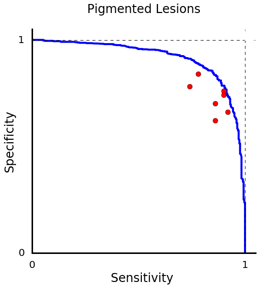
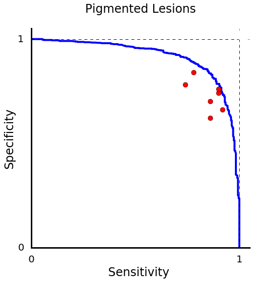
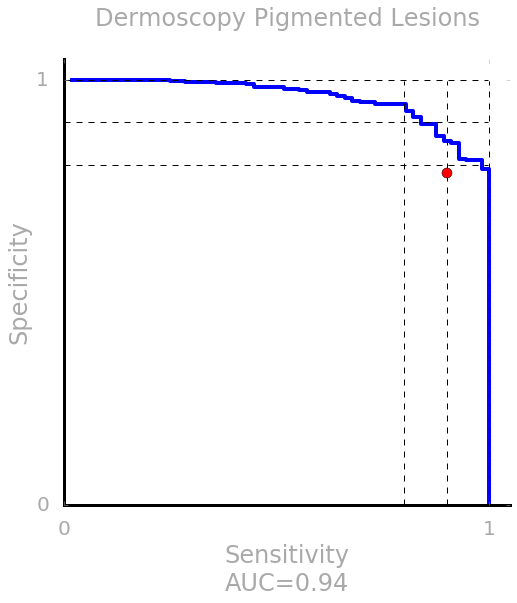
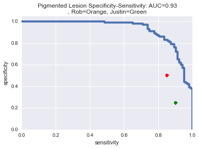
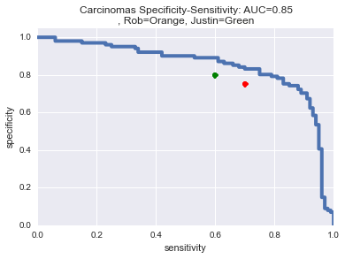
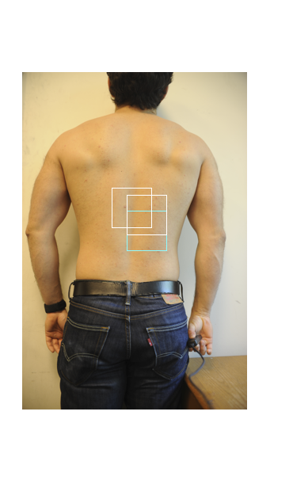
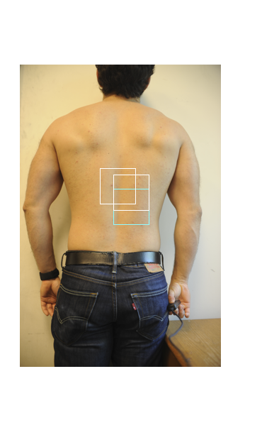

Skin Project - Group Meeting Updates
March 28, 2016
New Test Set: Connected Components (CC)
- Using Image Metadata, Turk1, Turk2, Dermquest IDs
- 17671 Test, 109421 Train
- Results: 52.7% General Acc., Pigmented SS=0.915, Epidermal SS=0.891
 

Duplicate Analysis: IMD and CC
- Many duplicates are mislabled
Some inflate accuracies, others deflate them
10% of duplicate clusters had multiple labels in them
Of those that did, the majority label only accounted for 62.29% on average
- Manual verification of duplicate rate on pigmented lesions using 10-NN retrieval
- IMD:
Malignant
First Batch,
Last Batch,
Benign
First Batch,
Last Batch,
| Class |
# Duplicates |
# Images |
% Duplicates |
| Pigmented Malignant |
17 |
314 |
5.4% |
| Pigmented Benign |
8 |
700 |
1.1% |
| Pigmented |
30 |
957 |
2.4% |
- CC:
Malignant
First Batch,
Last Batch,
Benign
First Batch,
Last Batch,
| Class |
# Duplicates |
# Images |
% Duplicates |
| Pigmented Malignant |
15 |
301 |
5.4% |
| Pigmented Benign |
15 |
656 |
2.2% |
| Pigmented |
30 |
957 |
3.1% |
ISBI Challenge
- Our best results to date.
- Train = 0.8, Val = 0.2
- Average over the plateaud validation set:
- AUC: 0.96
- Sensitivity: 0.98
- Specificity: 0.86
- Average Precision Score: 0.73
-

Questions
- Use EPIC for a small test set?
- Pros: path labeled. Comes from Stanford Hospital
- Cons: Hard to get data. Few images are useful for ML. Small dataset (~100s).
March 22, 2016
New Test Set: IMD-T (ImageMetaData Turked)
- 19000 test images
- Data Distribution
- Results:
Clinical Trials
- iOS: Setting up server backend for Apple Research Kit
- Rob using Sentry-Android daily.
ISBI Challenge
- Metrics: SS-AUC, Average Precision Score, Sensitivity, Specificity
- SS-AUC: 0.85
- APS: 0.61
- Sensitivity: 0.51
- Specificity: 0.92
Misc
- GPU Rack Server "mjolnir" up and running.
- Office refurbished.
The Next Things:
- @Nature: Wait for Tony on paper reviews.
- @Nature: Check again for duplicates. Then deploy dermtests at $300/test.
- @Nets: Spatial Transformers, Larger images, Detectors + CNNs
- @ISBI: Submit entry for competition (April 1 deadline)
- iOS Research Kit Backend
Questions:
- Must the dermtest be a subset of our final test set?
March 15, 2016
Paper
- Sent to Helen and Tony for reviews.
- Better test partition
- Partition with imagemetadata. Great results, but retrieval still found duplicates.
- Turking this partition now
- Waiting to test the dermatologists on the new partition. $300 for both tests is standard consulting fee.
American Academy of Dermatology Conference
- 3/3-3/8
- Met Alan Halpern from Memorial Sloan Kettering
- Invited to compete in the ISBI Dermoscopy Challenge
ISBI Challenge
- 900 dermoscopy training images. 300 testing images.
- Hosted by IBM Watson
- Winners get an automatic paper.
March 1, 2016
Finalizing Paper
February 23, 2016
- (General Accuracy, Pigmented AUC, Epidermal AUC)
- TreeLearning: Recursive Dividing N=1000: 52.2%, 0.91, 0.96


- TreeLearning: Merging Depth 1 N=250: 50.4%, 0.91, 0.95


- Baseline: 47.6%, 0.89, 0.94

-

- Used 1%, 10%, 50%, and 100% of the data
Turked Test Set
- Params: Maximum cost of 2 => 2263 images tossed out
- Training/Validation Images: 120998
- Testing Images: 3831
- less than 100 duplicates left
New derm tests
- Epidermal Lesions 200 Images
- Pigmented Lesions 200 Images (based on derm feedback from first test of 100 images)
- Can we pay them for the tests? Standard consulting fee ~=$150/hr
Clinical Trials begin March 8!!
February 08, 2016
Finalizing experiments for paper
- Create proper test set (intensive): Select from top databases, use Amazon Mechanical Turk for duplicates
- Refactoring tensorflow code for streamlined experimentation and hyperparameter searching
Framework for Clinical Trials
- Collection method: Apple Research Kit
- Target audience: ~ 20 derms, including international
- Prove: (1) Diagnostics, (2) Semantic tracking
- Given total body data: change-map over the skin
January 26, 2016
Diagnostic Experiments
| Network |
Overall Accuracy (Peak, Avg) |
Pigmented SS AUC |
Carcinoma SS AUC |
| baseline |
47.1, 43.7 |
0.89 |
0.93 |
| baseline: skinprob=0.4 |
47.2 |
0.93 |
0.89 |
| treelearning: N=1000 |
51.7, 49.0 |
0.85 |
0.92 |
| treelearning: N=500 |
49.0, 45.0 |
0.84 |
0.89 |
| treelearning: N=250 |
51.0, 49.1 |
0.89 |
0.90 |
| treelearning: N=1000, skinprob=0.4, allmice |
45.13, 42 |
0.8 |
0.88 |
| treelearning: N=1000, skinprob=0.35 |
47.1, 45 |
0.88 |
0.88 |
Other
- Met Frank Papay: thinks we're contender for Cleveland Clinic Top-10 Medical Innovations (first place!)
- Chat with Jeff Dean: no one working on skin cancer at Google at the moment
- Summer Interns: Yunzhu and Yang, possibly CURIS?
Next...
- More data!! Yay Cathy/Caroline!
- Data analysis. How to train?
- Test derms on epidermal lesions and general dermatology for 1 vs all SS curves.
- Polish paper submission
January 19, 2016
General Diagnostics with taxonomy-learning
- Num Images per class = 1000, Normal Inference: 50.8% Max, 49.5% Average
- Num Images per class = 1000, 4x Weighted Inference: 45.1% Max
- Pigmented SS curve goes down slightly due to the decrease in accuracy per class
Error Bars: Bayes Rule?
- Per Derm: p-value=5%
- Average Derm: p-value= 10%
Retrieval:
- Reveals that ~4.2% of our dermquest validation set contains multiple-viewpoint images. Source of issue: databases
will steal each other's images.
January 11, 2016
Diagnostics
- Switching workflow to Tensorflow
Data Collection
- Raunak and Catherine will be helping with collecting data from journals.
Testing Dermatologists
- Susan Swetter, Kerri Reiger, Kavita Serin
-
Paper
- Draft for Nature
- Meet with Helen/Tony: Need help here...
- Q: What experiments are missing still?
Quarterly Goals!
- Nature Paper submission
- FDA Process: Begin clinical trials with Justin/Rob/Susan
December 15, 2015
App Updates
- Derm app made following tensorflow's demo.
- Waiting for Dustan on the UI - latest app release has a bug
Testing Dermatologists
- Built Web app for pigmented lesions test:
http://stanford.edu/~esteva/dermtest_pigmented
- Flask App on AWS with Elastic Beanstalk: elastically scalable, auto-load balancing, etc etc. For future know-how in web-dev.
- Test is 100 questions (50 per class)
- One image taken from unique dermquest ids, up to 50 case ids.
-
Forbes Conference Debrief
- Michelle - CEO of Medable - Plot SS of Melanoma vs Nevi+Seborhheic Keratosis (below)
- IBM Watson - can become an ecosystem partner and use their data
- Houston VC wants to invest.
Other
- Hiring Updates: 34 Applicants - 10 Interviewees
- SkinVision wants to partner with us as researchers
December 1, 2015
Data
- Skindata3 - 111k Strong + Weakly labeled images
cutaneous-lymphoma 1006
dermal-tumor-benign 7920
dermal-tumor-malignant 914
epidermal-tumor-benign 5119
epidermal-tumor-malignant 11111
genodermatosis 4596
inflammatory 81533
pigmented-lesion-benign 3130
pigmented-lesion-malignant 2825
Accuracies
- Baseline (9-way - skinprob=0.4) = 48.1%

Other
- Web App Complete.
- AWS Account Created.
- Recruitment Email Sent - How do you select MS/undergrads?
November 24, 2015
New Metrics
- 6-way classification: lumping dermal+epidermal, inflammatory + genodermatosis
Non-pigmented: For a sensitivity of 0.98 the specificity is 0.49333333333
Pigmented: For a sensitivity of 0.98 the specificity is 0.3
Jarvis: 54.4%, Justin/Rob: 64%
- Synset:
0: cutaneous-lymphoma
1: inflammatory-and-genetic-conditions
2: non-pigmented-tumor-benign
3: non-pigmented-tumor-malignant
4: pigmented-lesion-benign
5: pigmented-lesion-malignant
Progress
- On 'sprint 2' of the Udacity app
- More trainable data by Friday
- Building web app for testing dermatologists more quickly
Next:
- ?: Hire a mobile guy
- Parse incorporation docs
- Poll our customers - what do they want in an app?
- ?: Considering a new taxonomy: http://id.who.int/icd/entity/1639304259
November 10, 2015
Data Collection
- New Dataset: SKINDATA2 ~ 80k images
- More sources coming from: spanish website, melanomas in mice!
Accuracies
- GoogleNet baseline on SKINDATA2 (Dermquest IDs + leafnodes - trained on 9-way) achieves 45% accuracy peak, 41% average
- Pigmented Lesions: For a sensitivity of 0.98 the specificity is 0.39
- Epidermal Lesions: For a sensitivity of 0.90 the specificity is 0.70
-

-
0 cutaneous-lymphoma
1 dermal-tumor-benign
2 dermal-tumor-malignant
3 epidermal-tumor-benign
4 epidermal-tumor-malignant
5 genodermatosis
6 inflammatory
7 pigmented-lesion-benign
8 pigmented-lesion-malignant
Tech
- App outsourced to Udacity nanodegree students.
October 27, 2015
Data Collection
- Downloaded dermaamin (27k images)
- New dataset size estimate 78k-100k
Increasing Accuracies
- Heavy Data Augmentation (enhancement factor of 3600) provides almost no boost over 40x enhancement.
- Implemented retrieval to verify that the SS curves of pigmented lesions and epidermal lesions are valid.

Legal
- Chat with Fenwick: can ignore OTL for now because...
- Data: Is ours to keep (not to mention open-source)
- Algorithms: We publish. Will server as medical validation.
- App / Tech: OTL Keeps. Which is fine.
We spin out when it comes time to code the deployable consumer product.
Everything else is a prototyping experiment.
October 20, 2015
Data Collection
- 168k Raw Downloads from Google Image Search using the taxonomy's leaf nodes as queries.
- Estimated 50k-100k are skin lesions -using binary lesion/not-lesion classifier
- Next Step:Scrape Common Domains found
Increasing Accuracies
- Classifier Pipeline Refactoring for additional functionality: Data Augmentation, Sliding-Window Classifier
- New Metrics for Accuracies:
- Pigmented Lesion SS Curve (melanoma vs nevi)
- Epidermal Lesion SS Curve (basal-cell-caricinoma vs look-alike)
- Pigmented Lesion SS Curve (squamous-cell-carcinoma vs look-alike) (possibly combined with basal?)
- General Classification Accuracy of Relevant Categories (between 4-9, TBD)
VGG + TreeLearning Achieves 40% on 9-way classification.
Results
- Pigmented Lesion SS Curve
(on our dataset - not on EPIC)
- Epidermal Lesion SS Curve
(on our dataset - not on EPIC)
October 13, 2015
MICCAI Conference - Munich, Germany
- Noel Codella - IBM Watson only working on dermoscopy, but interested in melanoma - have ~2000 images
- IBM Watson will release ~10k image dermoscopy challenge in 2016-2017
- IBM Watson is not a threat - their 30M images are mostly of radiology
Venture Beat Article - Skin Cancer
MIT Tech Review - Acquisition of MergeHealthcare
- We seem to have the largest dataset of any derm researcher.
Next Steps:
- Data Gathering: Google Image Search, ISDIC (IBM), ISIC, EPIC, Other atlases, Andy Conrad!
- Algorithms: Different metrics - i.e. pigmented lesion classification
September 22, 2015
Company Name: Sentry AI
Basic Idea: We are the first line of vigilance against general health conditions. We leverage data
collected at home (phones, smart watches, etc.) to monitor your health and inform your healthcare.
Step 1: Skin Cancer Detection
Experiments:
| LeafNodes: 30% Accuracy Top1 |
LeafNodes + BufferFill: 33% Accuracy Top1 |
LeafNodes + BufferFill + Tree-based Learning: 36% Accuracy Top1 |
|
|
|
|
Raw Data Distribution
- 5442 benign-dermal-tumors-cysts-sinuses
- 922 cutaneous-lymphoma-and-lymphoid-infiltrates
- 3515 epidermal-tumors-hamartomas-milia-and-growths-benign
- 4889 epidermal-tumors-pre-malignant-and-malignant
- 3111 genodermatoses-and-supernumerary-growths
- 38316 inflammatory
- 669 malignant-dermal-tumor
- 2570 pigmented-lesions-benign
- 1130 pigmented-lesions-malignant
June 9, 2015
Paper Writing
- Made 'Jarvis': DeepNet Algorithm with binary classification integrated into it
- Continued paper writing - nearly have a working manuscript!
June 2, 2015
Tracking System
Paper Writing
- Journal: Helen votes Science
- Google Doc: Writing has led to more analysis
- Accuracy per class, saliency maps


- Melanoma vs Nevi: Sensitivity vs Specificity & Precision vs Recall


- Dimensionality Reduction


- Testing Set: Dermatologists vs Jarvis
| #######################################################----------------- |
| |
Top1 Acc |
Top2 Acc |
| Justin Ko |
53.3% |
68.8% |
| Rob Novoa |
55.0% |
73.8% |
| Jarvis |
72.1% |
85.4% |
| #######################################################----------------- |
- EPIC Validation Set - 100 Melanoma images - 16% Accuracy -
should we Turk our dataset to clean it?
Should we require a protocol for taking images for diagnosing?
Examples From EPIC


Examples From Our Dataset
.jpg)
.jpg)
.jpg)
.jpg)
.jpg)
.jpg)
.jpg)
May 26, 2015
System Registration
- Dense patch matching using L2-norm (equivalent to mean-subtracted convolutions)
- Camera Array: Set up meeting with Marc Lavoy
Diagnostics
- Dermatologists vs Algorithms - we beat Gary Kasparov!!!!
| |
Top1 Acc |
Top2 Acc |
| Justin Ko |
53.3% |
68.8% |
| Rob Novoa |
55.0% |
73.8% |
| AlexNet Baseline |
64.4% |
81.3% |
May 19, 2015
System Registration
- End to End, Fully-Automated System Alignment over 2 weeks of images: Dense Sift + Spring-Mass Registration.
Movie.
- End to End, Fully-Automated System Alignment over 2 weeks of images: Dense Sift (clipped) + Spring-Mass Registration.
Movie.
Movie-mp4.
Green box is the target patch
Red boxes outline the matched patches
White boxes are a point-of-reference, the exact coordinates of the target patch


- Additional Correspondences: Human pose estimation: issue is that we need upper body detections
Diagnostics
- Rob: 55% Top1, 74% Top2 Accuracy
- Updated formulation to problem statement: What are the points on a person's body that are most rapidly changing semantically or becoming dangerous?
May 12, 2015
System Registration
- Challenge: Dermatologists want a metric on how a mark changes in time
- Registration vs Detection + Segmentation? MAP Skin Detector?


-
Facemorphing
- Old Idea: SIFT for mole mapping

- Requested Pelican Imaging Camera Array SDK
8 MP images stitched together such that everything is in focus
Diagnostics
- Rob changed the taxonomy, and it dropped our baseline accuracy to 43%
- Currently testing Rob and Justin (Gary Kasparov) on new taxonomy
- Net Experiments:
- 43% Top1 Acc : Baseline
- 48% Top1 Acc : Random Subclass Generation (m=1000)
- 50% Top1 Acc : Random Subclass Generation (m=411 - size of smallest clinical class)
- 62.61% Top1 Acc : Taxonomy Learning - Clinical Subclass Merging (Depth-1)
- 59.7% Top1 Acc : Taxonomy Learning - Clinical Subclass Recursive Merging & Division (Depth-full)
- GPU Cluster?
May 5, 2015
System Registration
-
L2 Norm Scanning on user-selected point + Landmark positioning using head


-
Head Detection using VGG-2010 Part-based detection code


Diagnostics
- Meeting with Tony Oro & Helen Blau
beat a few top clinical dermatologists - Justin Ko, and his equivalents at Harvard/Yale/East Coast
Integrate diagnosis into a teledermatology app
-
Meeting with Rob Novoa & Justin Ko
they will do IRB proposal and help get EPIC data
Paper 1: Clinical Diagnosis from Images (NEJM)
Paper 2: Gauging change in skin marks over time - i.e. registration (NEJM)
Paper 3: Matching Saliency Maps to clinical features in dermoscopy (Journal of Clinical Dermatology)
April 28, 2015
System Registration
- L2 Norm Scanning on user-selected point: Two Images
L2 Norm Scanning on user-selected point: Across Images
 



- Convex Approach
Diagnostics
- Scraped Dermoscopy/Histology Data - small
April 21, 2015
TNT:
System Registration
- Spring-Mass Model
with Dense SIFT
ICCV Nature Submission
Exciting meeting with Helen Blau
Will meet with Tony Oro
Must beat doctors at...
- Normal Images (Nets = 65% Top1 of 9-way classification)
- Dermoscopy - scraping data

- Histology - scraping data
April 14, 2015
The Next Thing (TNT): Dense SIFT, ICCV Submission
System Registration
- Spring-Mass Model
with SIFT, Harris, & Manual features
ICCV - Dataset Paper
-
Experiments
- Skin-10 Expanded
- Skin-10 Expanded + Imagenet (Cuticle, skin-graft)
- Skin-10 Expanded + Imagenet (Cuticle, skin-graft) + Texture Categories (Ants/Rocks)
-
Ideas to Increase Accuracy
- Generating Artificial Classes
- Updating penalty matrix during training
Nature Paper?
Beat dermatologists at...
- Normal Images (done)
- Dermoscopy Images
- Histology Slides
CIMIT Competition
April 7, 2015
Registration Results
Nonrigid ICP does a reasonable job at registration. However, the images exhibit too much movement in Z (i.e. intensity changes). The next iteration should either penalize intensity shifts or not allow them at all (i.e. a pure 2D spring-mass model)
- Non-rigidICP (Data_1)
- Non-rigidICP (Data_2)
- Non-rigidICP (Data_3)
- Non-rigidICP (zscale = 3)
- Non-rigidICP (zscale = 10)
- Up next: 2D spring & mass model?
ICCV Submission
Would publishing a dataset paper on fine-grained classification further our system?
CS 231n Paper: Deep Networks for Early Stage Skin Disease and Skin Cancer Classification
Other System Architectures
March 31, 2015
Takehome message:
The system architecture has been revamped, and we are working on image registration as a preprocessing step to classification.


Registration Techniques
Mobile App Demo